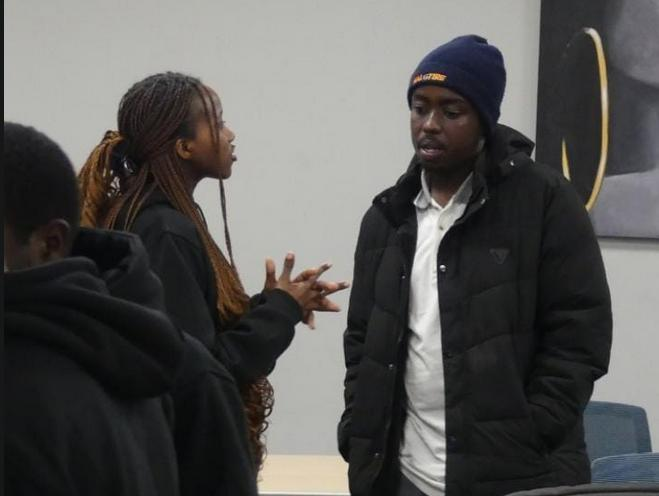
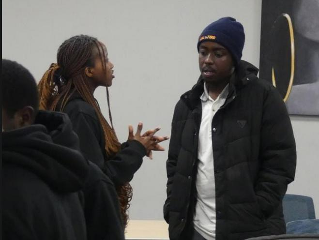

Reuben Kanyoko Wahome
Cybersecurity Professional | Red Teamer | Penetration Tester
Cybersecurity Professional | Red Teamer | Penetration Tester

 

A passionate and results-oriented cybersecurity professional specializing in red teaming and penetration testing. With a strong foundation in network forensics and a proven track record in technical assistance, I bring a comprehensive approach to securing digital environments. My expertise is backed by industry-recognized certifications, including CAPT, eJPT, CCNA and HCIA Datacomm, and hands-on experience gained from platforms like TryHackMe, CyberTalents, and HackTheBox.
Beyond my technical skills, I am a dedicated educator and leader in the cybersecurity community. As the cybersecurity lead at Multimedia University of Kenya, I mentor aspiring professionals and foster a collaborative learning environment. I am proficient in Python scripting and leverage AI to enhance my daily operations and security assessments.
Co-founded Cybersensei-EH where we deal in educating not only students but the general public on how hacks happen and how we can protect ourselves from cyber threats. We have a youtube channel(Cybersensei-EH) where we post content on a weekly basis including ethical hacks or home labs that we have done and we are sure they will educate people.
Hybrid, November 2025 - Present
Visit the youtube channel
Hybrid, October 2025 - Present
Online, July 2025 - August 2025
Onsite, June 2025 - August 2025
Kitengela
Kenol
A demonstration of how unencrypted HTTP traffic can be intercepted using network analysis tools, highlighting the critical role of SSL/TLS.
Read on MediumA deep dive into the methodologies behind Wi-Fi network hacking, demonstrating various attack vectors and defensive measures.
Read on Medium
Developed various scripts with python, especially when trying to gain access to system. One major breakthrough was when I created a script to dig and find the name and details of a database when doing sql injection practice on a lab in the hackviser platform
View on GitHubConducted an in-depth OSINT investigation into a fraudulent platform, leading to a detailed exposé that raised public awareness. Even helped part of my community members not to fall victim to the scam.
Read on Medium"You've always offered me support since the first day and words cannot repay how much I value and will always appreciate that. Here's to many years of innovation and creating impact in the tech world!"– Nelly Mawira, Founder of Hopcode Academy
You can check out the certificates I have gained in the Certificates page
I have done some technical writtings, from writeups, project documentations and even whistleblowing, check them out in my blogs page